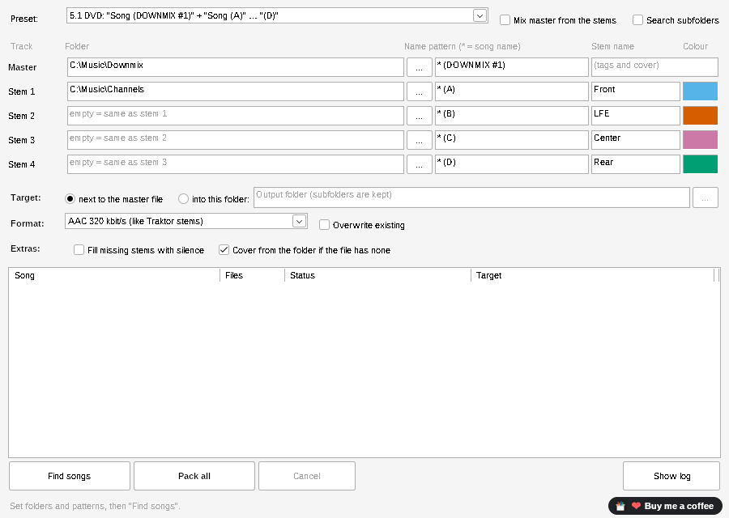
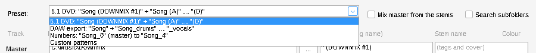
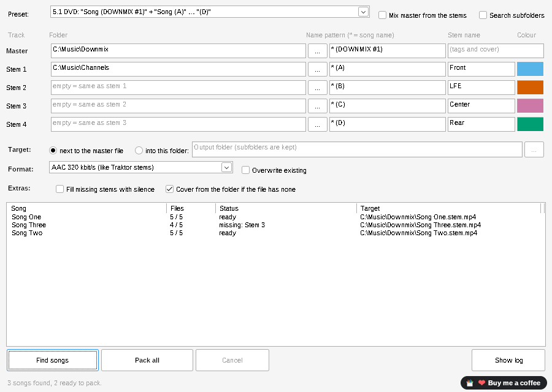
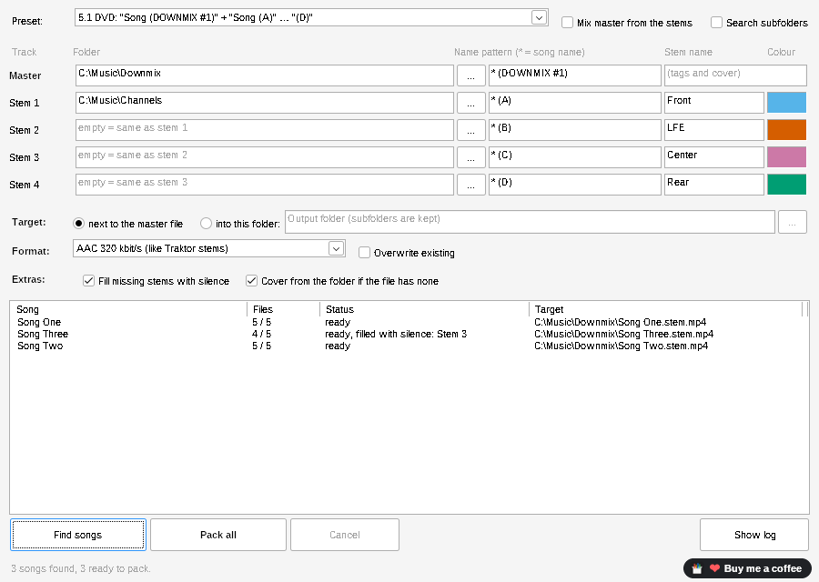
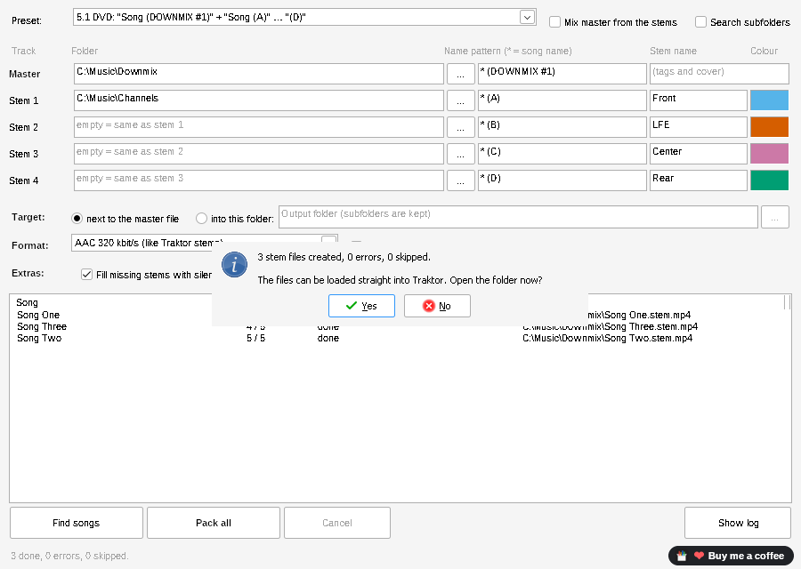
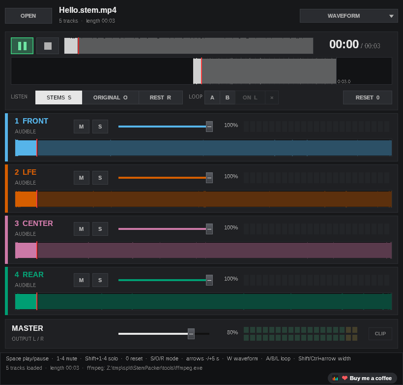

What it does: StemPacker builds Traktor stem files (.stem.mp4) from tracks you already have. For every song it takes one master file (for example your downmix) and up to four stem files (for example A, B, C and D) and puts them together into one stem file. There is no AI separation: your files are used exactly as they are. It works in batches, so hundreds of songs are packed in one run.
.stem.mp4 files. Still, as this is a first test version, please use a copy of a few songs (or a separate test folder) for the first run.tools (contains ffmpeg.exe) and lang next to StemPacker.exe.StemPacker.exe. If Windows shows “Windows protected your PC” (the program is not signed): click More info → Run anyway.StemPacker.ini next to the program.The folder Example contains three short test songs (simple test tones) in the same naming scheme as your DVD files. You can use it for a first try before using your own music.


A preset fills in the name patterns, stem names and colours in one click. Your folders stay as they are.
| Preset | Finds files like | Stem names |
|---|---|---|
| 5.1 DVD (default) | Song (DOWNMIX #1).wav = masterSong (A).wav … Song (D).wav = stems 1–4 | Front, LFE, Center, Rear |
| DAW export | Song.wav = master, Song_drums.wav, _bass, _other, _vocals | Drums, Bass, Other, Vox |
| Numbers | Song_0.wav = master, Song_1 … Song_4 | Drums, Bass, Other, Vox |
| Custom patterns | Selected automatically as soon as you change a pattern yourself. | as you set them |
| Column | What it is for |
|---|---|
| Folder and … | The folder where the files for this row are. Type the path or click … to choose it. You can also drop a folder onto the window: it becomes the master folder. An empty folder means “same as the row above”: so if A, B, C and D are all in one folder, set it only for Stem 1. |
| Name pattern | How the file name looks, without the extension (.wav). The star * stands for the song name. * (DOWNMIX #1) finds Hello (DOWNMIX #1).wav, the song is then called “Hello”, and the stems must be called Hello (A).wav and so on. Upper/lower case does not matter. A second star stands for any text that is not part of the song name. |
| Stem name | The name Traktor shows for this stem (e.g. Front, LFE). It is written into the stem file. The letters in your file names (A, B …) are only used to find the files. |
| Colour | The colour of this stem in Traktor. Click the coloured box to change it. |
| Master row | The master is the normal “full mix” track of the stem file (what Traktor and normal players play when stems are off). Title, artist, album, BPM, key, cover and other tags are taken from the master file. |
| Option | What it does |
|---|---|
| Mix master from the stems | For songs that have no master file: the four stems are mixed together (without changing the level) and used as the master. The master row is then switched off. |
| Search subfolders | Also looks into subfolders, e.g. one subfolder per album. The subfolders must have the same names in the master folder and in the stem folders. With an output folder, the same subfolders are created there. |
| Setting | What it does |
|---|---|
| Target | next to the master file: the stem file is saved in the same folder as the master. into this folder: all stem files go into the folder you choose (subfolders are kept). |
| File name | Always <song name>.stem.mp4, e.g. Hello.stem.mp4. |
| Format | AAC 320 kbit/s – like the stem files from Traktor itself, small files (recommended). ALAC lossless, 16 bit / 44.1 kHz – no quality loss, bigger files. ALAC 24 bit, original sample rate (test) – keeps 24 bit and e.g. 96 kHz. Not yet tested in Traktor, please try one song first and tell us if Traktor plays it. |
| Overwrite existing | Off: songs that already have a stem file are skipped (handy to continue a batch). On: they are built again. |
| Fill missing stems with silence | Off: a song with a missing stem file is skipped. On: a silent track is used instead, so the song is still packed. |
| Cover from the folder | If the master file has no cover, an image from its folder is used: <song>.jpg, cover.jpg, folder.jpg or front.jpg (also .png). |
Click Find songs. The list shows every song that was found:

| Column | Meaning |
|---|---|
| Song | Song name (the part of the file name at the star). |
| Files | How many of the 5 files were found (4 when the master is mixed). |
| Status | ready = will be packed · missing: … = file(s) not found, song is skipped · ready, filled with silence: … = missing stem becomes silent · already exists, will be skipped · after packing: done or an error message. |
| Target | Where the stem file will be saved. |
With Fill missing stems with silence switched on and Find songs clicked again:

Click Pack all. The songs are packed one after the other; the status line shows the progress. Cancel stops after the current step (the unfinished file is removed). At the end you see a summary and can open the folder:

The files can be loaded straight into Traktor Pro 4 like any stem file. Traktor shows the four stems with the names and colours you set.
To check a finished file before you load it into Traktor, start StemPlayer.exe (in the same folder) and click OPEN, or drop a .stem.mp4 file onto its window. It plays all four stems in sync and shows them with the names and colours you set.

| Control | What it does |
|---|---|
| M / S (per stem) | Mute this stem / play only this stem (solo). Keys: 1–4 mute, Shift+1–4 solo. |
| Slider (per stem) | Volume of this stem. |
| STEMS / ORIGINAL / REST | Listen to the four stems mixed, to the master track, or to the master minus the stems (shows what is not in the stems). |
| LOOP A / B / ON | Set a loop start and end and switch the loop on or off. |
| MASTER | Overall volume; CLIP lights up when the sum is too loud. |
Space | Play / pause. |
StemPlayer only reads the file and never changes it.
Everything the program does is written to logs\StemPacker.log next to the program. Click Show log to open it, and please send us that file.
StemPacker.exe | the program |
StemPlayer.exe | player to listen to finished stem files (section 5) |
StemPacker-User-Guide.pdf | this guide |
README.txt / LIESMICH.txt | short guide (English / German) |
Example\ | three short test songs in the 5.1 DVD naming scheme |
lang\ | language files (English, Spanish; German is built in) |
tools\ffmpeg.exe | FFmpeg (LGPL), does the audio work, with licence and source info |
LICENSE.txt | licence of StemPacker (MIT) |
Free software by Elospeed. FFmpeg is a trademark of Fabrice Bellard. Traktor is a trademark of Native Instruments. StemPacker is not affiliated with Native Instruments.